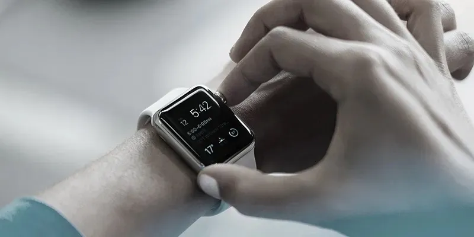

To humanise technology is to make technology function within the framework defined by the capabilities and limitations of regular people.
For a long period of history technology concerned itself with the development of tools that made things faster, better or cheaper. As a result, we began communicating with more people, exposing ourselves to and processing more information, increased our area of influence and in general became more productive. We began to achieve things in seconds that would otherwise take us hours or days before.
Take for example a farmer in the 18th century needing to learn about the best times to sow and harvest a crop, he would have to ask around, find someone who knew of anyone who grew that crop, physically walk the miles to meet the person and then learn about it. It would normally have been more than a day’s task. It’s not necessary to mention that a farmer today with the same problem can solve all of this in a matter of minutes by looking things up on the net or sending a message over email. His days have suddenly opened up and he can do a lot more.
Technology kept getting better and enabling us to do more. But today, one can argue that we’ve filled the cup of human capabilities to the brim. We are inundated with messages, notifications, emails, news feeds, phone calls and so much more on a daily basis. We are expected to be more productive, make more decisions and provide our attention to a lot more things than we ever used to. And it all has happened in a rather short period of time and our bodies and minds haven’t had the time in an evolutionary scale to adapt to it. Consequently, we are seeing greater number of cases of attention deficit disorders, of depression, of stress resulting in greater strains on inter-personal relationships. We as a species are just not able to keep up with the speed and quantum that technology can produce today.
To understand this better, consider the sequence of events when you receive an email. A red badge pops up over the application icon attracting your attention to it, a notification on your desktop may pop-up offering you a quick preview of what the message says and if you’re like many people today, you probably have your phone also hooked up to the mail service and you get the same notifications on that device too. If you’re using a smartwatch, then you add one more device that’s attracting your attention to the same email. Your mind suddenly registers a sense of urgency given that all so many of these things are telling you about this mail. Even if you are aware consciously that it’s just an email, it nevertheless succeeds at least in creating a nagging sensation in your mind until you deal with it — even if it is a discount coupon for some new offer on a shopping site that you couldn’t care less about.

This feeling you may have experienced is by no means a trivial one. It is so common that there have been several articles talking about methods to achieve the “zero inbox”, a supposed ideal state where you have no emails left unanswered in your inbox. There have been CEO’s writing about the tricks they’ve used and there have also been applications that claim to help you achieve that ideal. A lot of people in companies also associate their sense of how productive they’ve been based on the achievement of this goal. The goal seems to be to find a stable stance in front of the door while ignoring the fact that there is a full-size battle tank on the other side! We don’t have a fighting chance.
To humanise email technology would be to design the emailing process with the goal of accommodating email into the users life without disrupting it. What if we kept in mind the following questions when designing the email system: What does the user go through when an email is received? How much is he or she actually capable of doing? How much rest does the person require between tasks? Is now the best time to notify the user of a new email? Does the user really need to be notified of this email? Can the application provide assistance by presenting it in a form that is easy for the human to make decisions on, like presenting them with the possible responses included? Instead of acting like a petulant child that is begging for attention all the time, can we fashion the email system like a well-mannered adult that sought your attention only when it knew you’re free?
Given the arc on which technology is progressing into the future, it is imperative that we as designers find ways to make technology more palatable to human beings and accommodate it into their lives instead of the other way around. And that’s precisely our goal here at Redd.